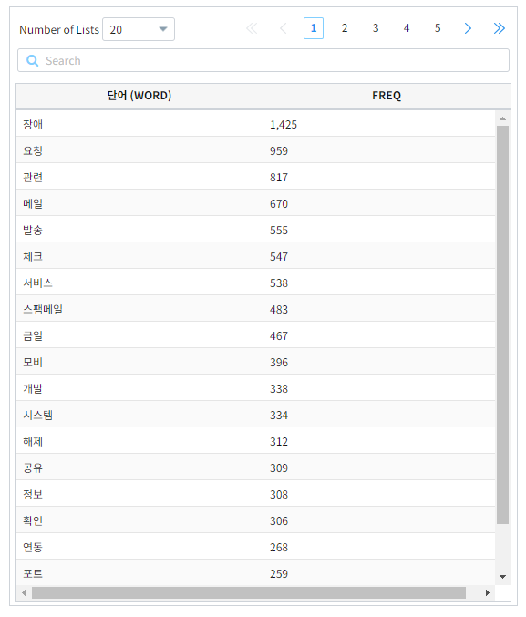
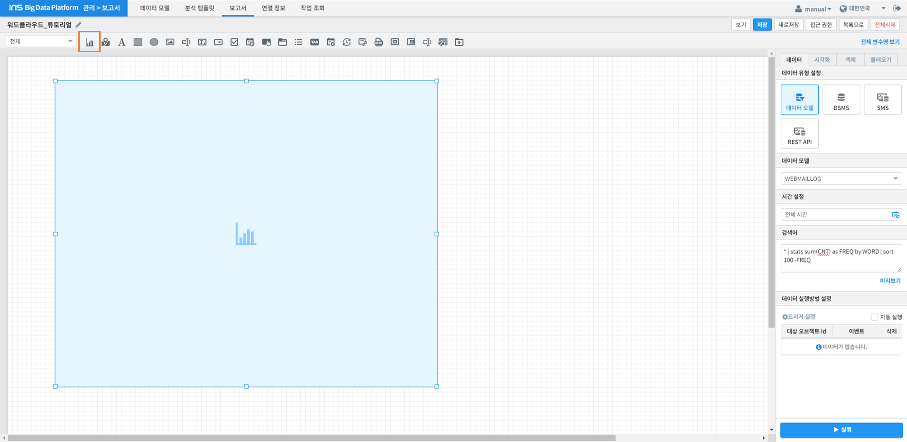
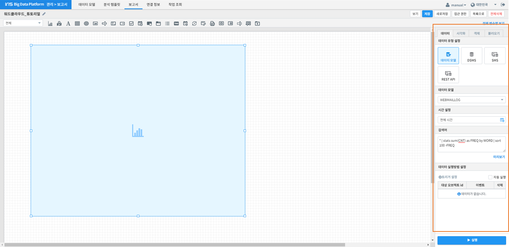
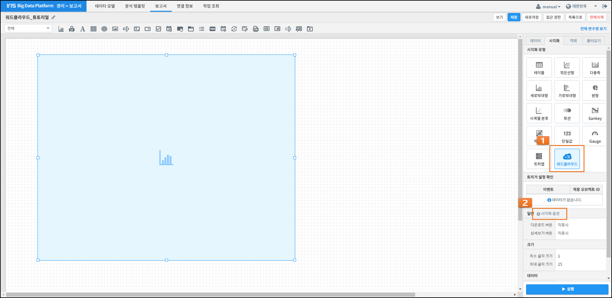
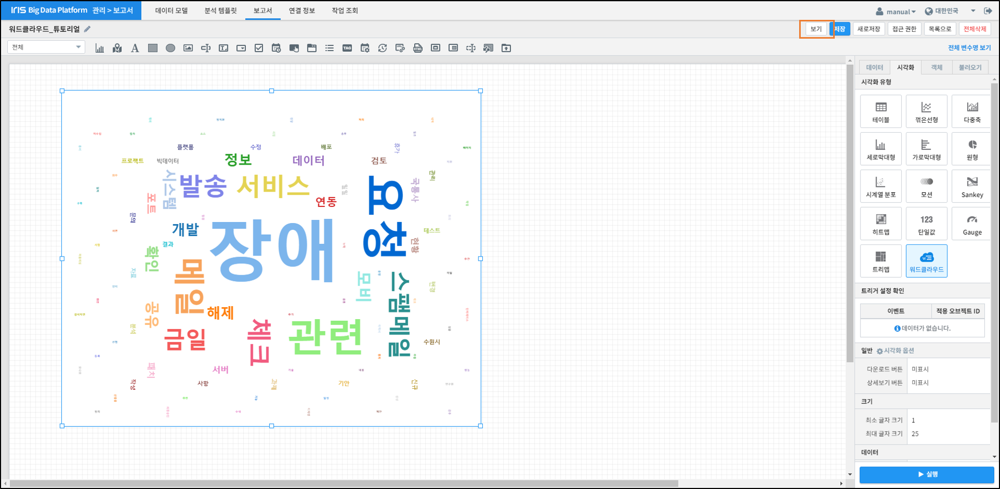
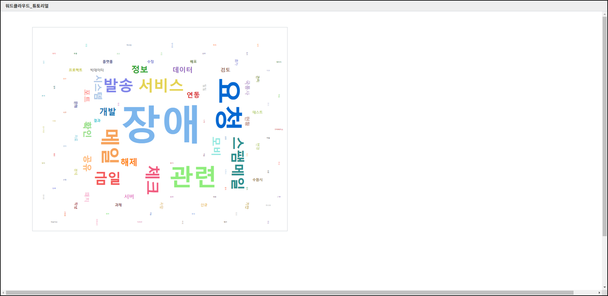

워드클라우드 그리기¶
개요¶
단어의 출현빈도 또는 가중치에 따라 단어의 크기를 다르게 하여 그리는 워드클라우드(Word Cloud)를 보고서에 추가하는 방법에 관하여 기술합니다.
사용 데이터¶
워드클라우드를 그리기 위해서는 단어 컬럼과 단어의 출현에 따른 가중치가 될 수치 컬럼이 필요합니다.
아래 그림은 메일에 출현한 단어들과 단어들의 출현빈도로 이루어진 데이터의 예시 화면입니다.
{kind=link}
워드클라우드 그리기¶
워드클라우드를 그리는 방법은 다음과 같습니다.
아래 절차는 보고서 편집 화면에서 진행됩니다.
차트 영역 생성¶
위 화면에 주황색 상자로 표시된 《차트》 아이콘을 클릭한 후, 마우스 드래그 앤 드롭으로 워드클라우드가 그려질 영역을 생성합니다.
데이터 설정¶
이어서 화면 우측의 《데이터》 탭에서 워드클라우드를 그릴 때 사용될 데이터를 설정합니다.
위 예시 화면은 메일 데이터의 전체 기간 중 출현한 단어별로 출현 빈도의 총합을 구하고, 그 중 빈도의 총합의 상위 100개만 추려낸 설정을 보여주고 있습니다.
데이터 Command: * | stats sum(CNT) as FREQ by WORD | sort 100 -FREQ
시각화 옵션 설정¶
데이터 설정이 끝나면 우측 《시각화》 탭으로 이동합니다.
《시각화 유형》에서 《워드 클라우드》를 선택한 후 하단의 《일반》 옆의 《시각화 옵션》을 클릭하십시오.
옵션 |
설명 |
|---|---|
다운로드 버튼과 상세보기 버튼 표시여부를 설정 |
|
워드클라우드에 표시되는 글자의 최소/최대 크기를 설정 |
|
워드클라우드에 표시할 단어 컬럼을 《키 값》에, 단어 크기에 적용될 가중치 컬럼을 《가중치》에 설정 |
{kind=link}
{kind=link}
{kind=link}
그리고자 하는 워드클라우드에 맞게 위 옵션들을 수정합니다.
결과 확인¶
설정을 마친 후 우측 하단의 [실행] 버튼을 클릭하면, 아래 그림과 같이 결과가 표시됩니다.
제대로 적용됐는지 확인하고자 한다면, 우측 상단의 [보기] 버튼 (주황색 상자로 표시)을 눌러 작성 결과를 다시 한 번 확인합니다.
결과가 정상적으로 표출될 경우, 작성 화면에서 [저장] 버튼을 눌러 결과를 저장합니다.
주의사항¶
[Notice 01] [보기] 버튼을 눌렀을 때, 차트가 자동으로 실행되지 않을 경우
차트의 경우, "자동 실행"을 설정하지 않을 경우 보고서 조회 시 자동으로 실행되지 않습니다.
[데이터] 탭 하단의 [데이터 실행방법 설정]에 있는 "자동 실행"을 선택한 후 다시 확인해보시기 바랍니다.
(아래 그림 참조)

[Notice 02] "키 값"과 "가중치" 드롭다운 메뉴에 아무 컬럼도 표시되지 않을 경우, 아래 절차를 진행하시기 바랍니다.
1) 데이터 설정에 오류가 있는지 확인합니다.
2) 데이터 설정에 문제가 없다면, 우측 하단의 [실행] 버튼을 클릭한 후 다시 확인하시기 바랍니다.
[Notice 03] 워드클라우드 키워드 개수 상한
워드클라우드로 그릴 수 있는 키워드 개수는 시스템 요구사항에 따라 상한이 존재합니다.
워드클라우드 이미지의 가독성과 해석력도 고려하는 점에서, 워드클라우드로 표현할 데이터의 키워드의 개수가 너무 많지 않게 설정하시길 권고드립니다.